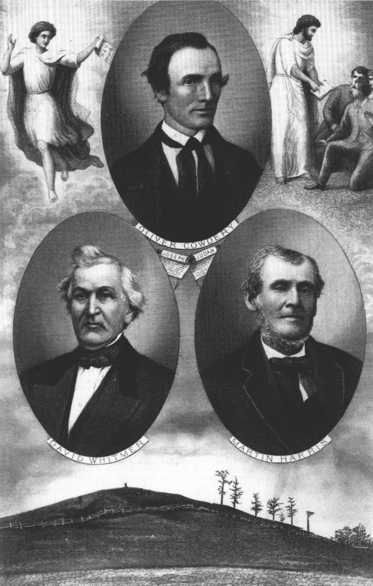
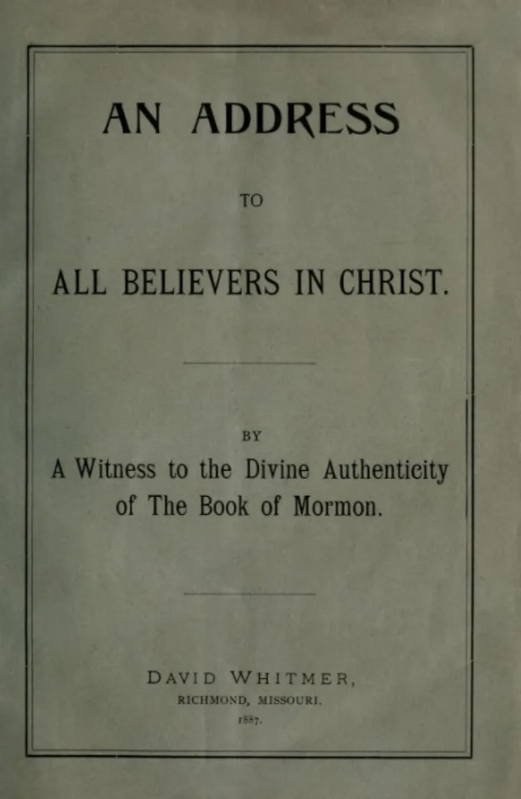

LDS scholars have a real answer here. Say so before your friend does.
Eleven men signed statements printed in the front of every Book of Mormon. Three describe an angel and a voice; eight describe handling the plates.
It is the strongest evidence the book has, and it deserves serious treatment.
All eleven were Smith family, Whitmer family, or Martin Harris. None was an outsider.
And all of them lived in a world where seeing by "second sight" was normal.
Harris spoke of seeing "with the eyes of faith" and "spiritual eyes." Stephen Burnett's 1838 letter reports Harris saying so publicly.
Not one of the eleven ever took it back. Not Cowdery.
Not Harris. Not Whitmer — even after being thrown out of the church, when taking it back would have cost nothing.
Whitmer never came back to the church, and reaffirmed it as he was dying.
Genuinely arguable, and this is the best card the other side holds. Treat it with respect.
"What do you make of the 'spiritual eyes' language? I'm asking honestly."


Not one of the eleven ever took it back, even when it would have cost nothing.
Four replies, and the first is the strongest fact on that side. Not one of the eleven ever took it back. That includes Cowdery, Harris and Whitmer, after bitter church trials threw them out. Taking it back then would have cost nothing and won them vindication. Whitmer never returned. Yet he restated it to hostile interviewers for 50 years, and had it carved on his gravestone.
Second, the Eight Witnesses' account is plain and in daylight. They 'hefted' and 'handled' the plates. No angel was involved. That is a different kind of evidence, and the 'spiritual eyes' point does not touch it.
Third, Richard Lloyd Anderson wrote Investigating the Book of Mormon Witnesses in 1981. He shows that 'spiritual eyes' in that century often meant real sight granted by the Spirit, as at 2 Kings 6:17. Most such quotes are late, secondhand, or hostile paraphrase.
Fourth, the Whitmer point cuts the other way. A man who denounced Smith and never came back is the hardest witness of all to explain by social pressure.
The best card they hold: treat it with respect, and do not call it settled.
This one is genuinely two-sided. It is the strongest surviving Latter-day Saint position in this list. The record of never taking it back is real and not easily brushed off. Whitmer above all.
Against that, the witnesses were not outsiders. They were kin and business partners in one venture. Their view of knowing counted a vision as seeing. And Harris later gave the same kind of backing to the Shaker 'Sacred Roll'. That costs his word some of its value as a test.
Be wary of any source that calls this settled. The criticism is weaker than critics claim, and the answer stronger. But sincere men prove sincerity, not what was there.